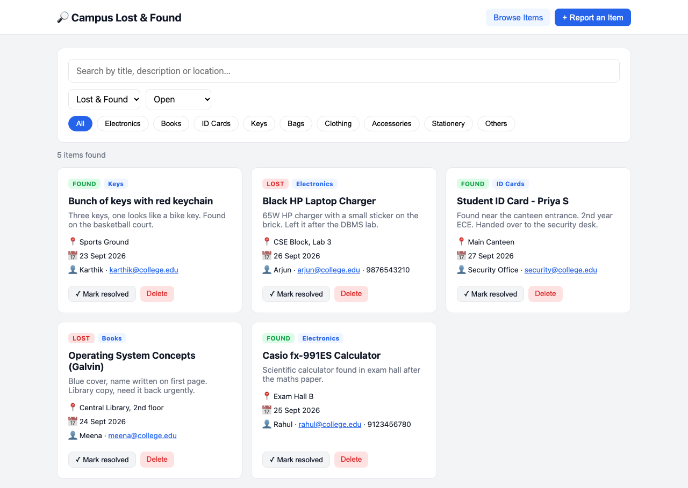
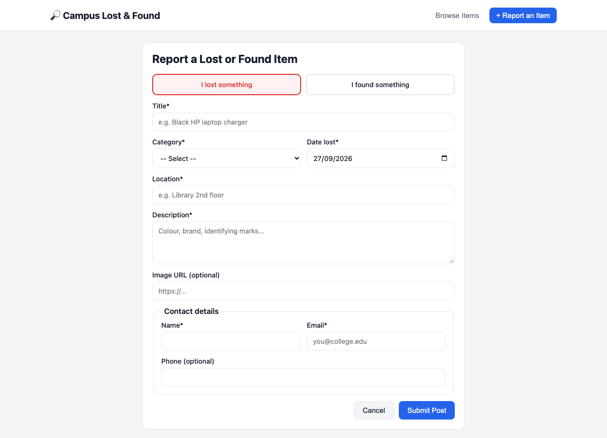

Full-Stack Web Application using MongoDB, Express.js, React and Node.js (MERN)
| Name | ______________________ |
| Register No. | ______________________ |
| Class / Section | ______________________ |
| Subject | ______________________ |
| Submitted to | ______________________ |
| Date | ______________________ |
Students often lose items on campus, such as ID cards, calculators, chargers, books and keys. Today these are usually reported on WhatsApp groups or notice boards, where posts get buried and are hard to search. The college needs a central Lost and Found portal where students can:
| Layer | Technology | Purpose |
|---|---|---|
| Database | MongoDB | Stores posts as JSON-like documents |
| ODM | Mongoose | Defines the schema, runs validation and builds queries |
| Backend | Node.js + Express.js | REST API server |
| Frontend | React 18 (Vite) | Single-page user interface |
| Communication | HTTP + JSON (Fetch API) | Client–server data exchange |
| Tools | npm, VS Code, Chrome DevTools, curl | Development and testing |
The application follows a three-tier architecture:
┌──────────────────────┐ HTTP/JSON ┌──────────────────────┐ Mongoose ┌──────────────────┐
│ PRESENTATION TIER │ ───────────▶ │ APPLICATION TIER │ ─────────▶ │ DATA TIER │
│ │ │ │ │ │
│ React (browser) │ GET/POST/ │ Node.js + Express │ find(), │ MongoDB │
│ - PostForm │ PUT/DELETE │ - routes/posts.js │ create(), │ lost_and_found │
│ - ListingPage │ /api/posts │ - validation │ update... │ └─ posts │
│ - usePosts (state) │ ◀─────────── │ - error handling │ ◀───────── │ collection │
└──────────────────────┘ JSON reply └──────────────────────┘ documents └──────────────────┘
localhost:5173 localhost:5050 localhost:27017
| Decision | Reason |
|---|---|
One posts collection for both lost and found items, told apart by a type field |
Both kinds of post have the same fields. One collection makes "view all posts" a single query, and lost/found becomes just another filter. |
category stored as an enum string |
Categories are fixed and few in number. An enum stops invalid values, and the category can be read without a join or $lookup. |
contact embedded as a sub-document |
Contact details are always shown together with the post and are never queried on their own, so embedding is the right MongoDB pattern. |
date kept separate from createdAt |
date records when the item was lost or found; createdAt records when it was posted. Both are useful. |
status field (open / resolved) |
Returned items can be marked resolved instead of deleted, so the history is kept. |
timestamps: true |
Mongoose maintains createdAt and updatedAt automatically, which are used for "newest first" sorting. |
posts| Field | Type | Required | Constraints / Notes |
|---|---|---|---|
_id |
ObjectId | auto | Primary key generated by MongoDB |
type |
String | ✔ | enum: lost, found |
title |
String | ✔ | 3–100 chars, trimmed |
description |
String | ✔ | max 1000 chars |
category |
String | ✔ | enum: electronics, books, id-cards, keys, bags, clothing, accessories, stationery, others |
location |
String | ✔ | e.g. "Central Library, 2nd floor" |
date |
Date | ✔ | Date lost/found; cannot be in the future |
imageUrl |
String | ✘ | Optional photo link |
contact.name |
String | ✔ | max 60 chars |
contact.email |
String | ✔ | valid email format, lower-cased |
contact.phone |
String | ✘ | 7–15 digits |
status |
String | auto | enum: open (default), resolved |
createdAt |
Date | auto | Added by timestamps |
updatedAt |
Date | auto | Added by timestamps |
{
"_id": "6ab942853cd841cf2f13e401",
"type": "found",
"title": "Casio fx-991ES Calculator",
"description": "Scientific calculator found in exam hall after the maths paper.",
"category": "electronics",
"location": "Exam Hall B",
"date": "2026-09-25T00:00:00.000Z",
"contact": {
"name": "Rahul",
"email": "rahul@college.edu",
"phone": "9123456780"
},
"status": "open",
"createdAt": "2026-09-27T16:21:09.412Z",
"updatedAt": "2026-09-27T16:21:09.412Z"
}
backend/models/Post.js)const CATEGORIES = ['electronics', 'books', 'id-cards', 'keys', 'bags',
'clothing', 'accessories', 'stationery', 'others'];
const contactSchema = new mongoose.Schema({
name: { type: String, required: true, trim: true, maxlength: 60 },
email: { type: String, required: true, lowercase: true,
match: [/^\S+@\S+\.\S+$/, 'Please enter a valid email'] },
phone: { type: String, match: [/^[0-9+\-\s]{7,15}$/, 'Invalid phone'] },
}, { _id: false });
const postSchema = new mongoose.Schema({
type: { type: String, enum: ['lost', 'found'], required: true },
title: { type: String, required: true, trim: true, minlength: 3, maxlength: 100 },
description: { type: String, required: true, trim: true, maxlength: 1000 },
category: { type: String, enum: CATEGORIES, required: true },
location: { type: String, required: true, trim: true },
date: { type: Date, required: true,
validate: { validator: v => v.getTime() <= Date.now() + 86400000,
message: 'Date cannot be in the future' } },
imageUrl: { type: String, trim: true },
contact: { type: contactSchema, required: true },
status: { type: String, enum: ['open', 'resolved'], default: 'open' },
}, { timestamps: true });
// 1. Compound index – speeds up "filter by category/type, newest first"
postSchema.index({ category: 1, type: 1, createdAt: -1 });
// 2. Text index – supports keyword search over title, description, location
postSchema.index(
{ title: 'text', description: 'text', location: 'text' },
{ weights: { title: 5, location: 2, description: 1 } }
);
Without indexes, MongoDB has to scan every document for each category search (a COLLSCAN). With the compound index it jumps straight to the matching documents (an IXSCAN), which keeps the portal fast as posts pile up over the semesters.
Base URL: http://localhost:5050/api
| Method | Endpoint | Description | Success | Errors |
|---|---|---|---|---|
| GET | /posts |
List posts, with filtering, search & pagination | 200 | 500 |
| GET | /posts/categories |
List categories with count of open posts | 200 | 500 |
| GET | /posts/:id |
Get a single post | 200 | 400, 404 |
| POST | /posts |
Create a new lost/found post | 201 | 400 |
| PUT | /posts/:id |
Update a post (edit details / mark resolved) | 200 | 400, 404 |
| DELETE | /posts/:id |
Delete a post | 200 | 400, 404 |
GET /posts| Param | Example | Effect |
|---|---|---|
category |
electronics |
Only posts in this category |
type |
lost / found |
Only lost or only found items |
status |
open / resolved |
Filter by status |
q |
calculator |
Case-insensitive search in title, description, location |
page, limit |
1, 12 |
Pagination (limit capped at 50) |
Example: GET /api/posts?category=electronics&type=found&q=calc&page=1
POST /api/posts, request body:
{
"type": "lost",
"title": "Blue water bottle",
"description": "Milton 1L, has a sticker",
"category": "others",
"location": "Gym",
"date": "2026-09-27",
"contact": { "name": "Test", "email": "t@college.edu" }
}
Response 201 Created:
{
"success": true,
"data": {
"_id": "6ab9429db703e415cb5d87cb",
"type": "lost", "title": "Blue water bottle", "status": "open",
"createdAt": "2026-09-27T16:21:49.017Z", "...": "..."
}
}
Response 400 Bad Request (validation failed):
{
"success": false,
"message": "Validation failed",
"errors": {
"title": "Title must be at least 3 characters",
"category": "Invalid category",
"contact.email": "Please enter a valid email"
}
}
GET /api/posts?category=electronics, response 200 OK:
{
"success": true,
"data": [ { "title": "Casio fx-991ES Calculator", "...": "..." },
{ "title": "Black HP Laptop Charger", "...": "..." } ],
"pagination": { "page": 1, "limit": 12, "total": 2, "pages": 1 }
}
backend/routes/posts.js, key parts)// GET /api/posts – list with filters
router.get('/', async (req, res, next) => {
try {
const { category, type, status, q } = req.query;
const page = Math.max(parseInt(req.query.page) || 1, 1);
const limit = Math.min(parseInt(req.query.limit) || 12, 50);
const filter = {};
if (category && category !== 'all') filter.category = category;
if (type && type !== 'all') filter.type = type;
if (status && status !== 'all') filter.status = status;
if (q) {
const rx = new RegExp(escapeRegex(q.trim()), 'i');
filter.$or = [{ title: rx }, { description: rx }, { location: rx }];
}
const [posts, total] = await Promise.all([
Post.find(filter).sort({ createdAt: -1 })
.skip((page - 1) * limit).limit(limit).lean(),
Post.countDocuments(filter),
]);
res.json({ success: true, data: posts,
pagination: { page, limit, total, pages: Math.ceil(total / limit) || 1 } });
} catch (err) { next(err); }
});
// POST /api/posts – create
router.post('/', async (req, res, next) => {
try {
const data = pick(req.body, EDITABLE_FIELDS); // whitelist fields
delete data.status; // new posts are always "open"
const post = await Post.create(data); // schema validation runs here
res.status(201).json({ success: true, data: post });
} catch (err) { next(err); }
});
// PUT /api/posts/:id – update
router.put('/:id', async (req, res, next) => {
try {
const post = await Post.findByIdAndUpdate(req.params.id,
pick(req.body, EDITABLE_FIELDS), { new: true, runValidators: true });
if (!post) return res.status(404).json({ success: false, message: 'Post not found' });
res.json({ success: true, data: post });
} catch (err) { next(err); }
});
// DELETE /api/posts/:id – delete
router.delete('/:id', async (req, res, next) => {
try {
const post = await Post.findByIdAndDelete(req.params.id);
if (!post) return res.status(404).json({ success: false, message: 'Post not found' });
res.json({ success: true, message: 'Post deleted' });
} catch (err) { next(err); }
});
| Middleware | Role |
|---|---|
cors() |
Allows the React dev server (port 5173) to call the API |
express.json() |
Parses JSON request bodies into req.body |
notFound |
Returns 404 JSON for unknown routes |
errorHandler |
Converts Mongoose ValidationError into 400 with field-wise messages, CastError (bad ObjectId) into 400, and anything else into 500 |
Security measures: fields are whitelisted (pick) so clients cannot overwrite _id or createdAt; user search text is escaped before it goes into a regex, which blocks regex injection; limit is capped at 50; and runValidators: true makes updates go through the same validation as new posts.
App ← view state (browse/report), toast, usePosts()
├── Header ← navigation buttons
└── main
├── PostForm ← (view = "report") controlled form, local form state
│
└── ListingPage ← (view = "browse") receives posts + actions as props
├── FilterBar ← search box, type/status dropdowns, category chips
├── PostList ← maps posts → cards, shows empty state
│ └── PostCard × N ← one post: badges, details, Resolve / Delete buttons
└── Pagination controls
usePosts() (custom hook) ← posts, filters, pagination, loading, error,
createPost / updatePost / deletePost
postsApi (service module) ← fetch() wrapper for /api/posts
| Component | Props In | Local State | Responsibility |
|---|---|---|---|
App |
– | view, toast |
Root; switches between form and listing; owns usePosts() |
Header |
view, onChangeView |
– | Navigation |
PostForm |
onSubmit, onCancel |
form, errors, submitting, serverError |
Controlled inputs, client validation, submit |
ListingPage |
posts, filters, pagination, actions | – | Arranges filters, list, pagination; handles resolve/delete |
FilterBar |
filters, onChange |
– | Search & category/type/status filters |
PostList |
posts, loading, handlers |
– | Renders grid of cards or empty message |
PostCard |
post, onResolve, onDelete |
– | Displays a single post |
State is kept as close as possible to where it is used and lifted up only when siblings need to share it:
| State | Where it lives | Why |
|---|---|---|
| Form field values, form errors, submitting flag | PostForm (useState) |
Only the form needs them |
posts, filters, pagination, loading, error |
usePosts hook, called in App |
Shared by the listing and by the form (a new post must appear in the list) |
| Current view, toast message | App |
Global UI state |
The custom hook usePosts acts as a small store. It keeps all server data and API calls in one place, so the components stay presentational and are easy to test. For an app this size, useState plus a custom hook is enough; Redux or Context would be over-engineering. If the app grew, for example with login and user profiles, the hook could be moved into a React Context provider or replaced by a library like React Query without changing the components.
PostForm.jsx, key parts)export default function PostForm({ onSubmit, onCancel }) {
const [form, setForm] = useState(EMPTY_FORM); // controlled inputs
const [errors, setErrors] = useState({});
const [submitting, setSubmitting] = useState(false);
const handleChange = (e) => {
const { name, value } = e.target;
setForm(prev => ({ ...prev, [name]: value }));
};
const handleSubmit = async (e) => {
e.preventDefault();
const clientErrors = validate(form); // instant feedback
setErrors(clientErrors);
if (Object.keys(clientErrors).length) return;
setSubmitting(true);
try {
await onSubmit(toPayload(form)); // → App → usePosts.createPost
setForm(EMPTY_FORM);
} catch (err) {
setErrors(mapServerErrors(err.fieldErrors)); // show server validation errors
} finally {
setSubmitting(false);
}
};
...
}
usePosts.js, key parts)export function usePosts() {
const [posts, setPosts] = useState([]);
const [filters, setFilters] = useState({ category: 'all', type: 'all',
status: 'open', q: '' });
const [loading, setLoading] = useState(false);
const fetchPosts = useCallback(async () => {
setLoading(true);
const res = await postsApi.list({ ...filters, page });
setPosts(res.data);
setLoading(false);
}, [filters, page]);
// re-fetch when filters change (debounced 300 ms for the search box)
useEffect(() => {
const t = setTimeout(fetchPosts, 300);
return () => clearTimeout(t);
}, [fetchPosts]);
const createPost = async (data) => {
const res = await postsApi.create(data);
setPosts(prev => [res.data, ...prev]); // show immediately
fetchPosts(); // re-sync with server
};
...
}
USER PostForm App / usePosts postsApi Express API Mongoose/MongoDB
│ │ │ │ │ │
│ fills form │ │ │ │ │
│──────────────▶│ setForm() on │ │ │ │
│ │ every keystroke │ │ │ │
│ clicks Submit │ │ │ │ │
│──────────────▶│ validate(form) │ │ │ │
│ │ toPayload(form) │ │ │ │
│ │── onSubmit(data) ─▶│ createPost(data) │ │ │
│ │ │─ create(data) ──▶│ │ │
│ │ │ │ POST /api/posts │ │
│ │ │ │ JSON body ──────▶│ cors, express.json │
│ │ │ │ │ pick() whitelist │
│ │ │ │ │── Post.create() ───▶│ validate
│ │ │ │ │ │ insertOne
│ │ │ │ │◀── saved doc ───────│ +_id,dates
│ │ │ │◀── 201 + JSON ───│ │
│ │ │◀── res.data ─────│ │ │
│ │ │ setPosts([new,…])│ │ │
│ │ │ fetchPosts() ────┼─ GET /api/posts ▶│── Post.find() ─────▶│
│ │ │◀─────────────────┼──── 200 JSON ────│◀────────────────────│
│ │◀─ resolved ────────│ setView('browse')│ │ │
│ sees new post │ │ toast "live!" │ │ │
│◀──────────────┼──── React re-renders ListingPage → PostList → PostCard │ │
Stage 1: Frontend (React)
App sets view = 'report' and renders PostForm.value comes from form state, and each keystroke calls handleChange, which updates the state with setForm.handleSubmit calls e.preventDefault() to stop a page reload, then runs validate(form). If a field is invalid, the errors show immediately and no request is sent.toPayload(form) turns the flat form fields into the nested JSON the API expects (e.g. contactName → contact.name).PostForm calls onSubmit(payload), which runs App.handleCreate, which calls usePosts.createPost.postsApi.create() sends the request with fetch('/api/posts', { method: 'POST', headers: {'Content-Type': 'application/json'}, body: JSON.stringify(payload) }).Stage 2: Backend (Node.js / Express)
/api from 5173 to 5050.cors middleware checks the origin, and express.json() parses the body into req.body.POST /api/posts to the create handler. The handler whitelists fields with pick() and removes status, so every new post starts as open.Post.create(data).Stage 3: Database (Mongoose → MongoDB)
ValidationError, which the errorHandler turns into a 400 response listing the errors per field. The form then shows those messages under the matching inputs.status: 'open') and the timestamps (createdAt, updatedAt), and MongoDB runs insertOne, which generates the _id. MongoDB also updates the collection's indexes.201 Created with { success: true, data: post }.Stage 4: Back to the Frontend
postsApi sees res.ok and returns the parsed JSON to createPost.createPost calls setPosts(prev => [newPost, ...prev]), an optimistic prepend that shows the post without waiting for another request. It then calls fetchPosts() to re-sync the list, counts and pagination with the database.App switches view back to 'browse' and shows the toast "Your post is live!".posts state changed, React re-renders ListingPage, then PostList, then a new PostCard, and the post appears at the top of the listing.GET /api/posts, since it is now stored in MongoDB.User clicks "Books" chip
→ FilterBar calls onChange({ category: 'books' })
→ usePosts.updateFilters() → setFilters({...filters, category:'books'}), setPage(1)
→ useEffect detects the new filters → waits 300 ms (debounce) → fetchPosts()
→ GET /api/posts?category=books&status=open&page=1
→ Express builds { category: 'books', status: 'open' }
→ Post.find(filter).sort({createdAt:-1}) (uses the compound index)
→ 200 JSON { data: [...], pagination }
→ setPosts(data) → React re-renders the list
The same flow handles the keyword search box. The 300 ms debounce means typing "calculator" sends one request instead of ten.
PostCard → ListingPage.handleResolve → updatePost(id, {status:'resolved'}) → PUT /api/posts/:id → findByIdAndUpdate(..., {runValidators:true}) → the updated document is returned → the card is replaced in state.deletePost(id) → DELETE /api/posts/:id → findByIdAndDelete → the post is removed from state with posts.filter(...).The API was tested with curl against a running server with sample data loaded. Actual results:
| # | Test Case | Request | Expected | Result |
|---|---|---|---|---|
| 1 | Filter by category | GET /posts?category=electronics |
2 electronics posts | ✅ Calculator, Charger returned |
| 2 | Keyword search (partial) | GET /posts?q=calc |
Calculator post | ✅ ['Casio fx-991ES Calculator'] |
| 3 | Create valid post | POST /posts (valid body) |
201, status: "open" |
✅ 201, status forced to open even though resolved was sent |
| 4 | Create invalid post | POST /posts (bad type, short title, bad email…) |
400 with field errors | ✅ 400, 8 field-level messages |
| 5 | Mark resolved | PUT /posts/:id {status:"resolved"} |
Updated doc | ✅ status: "resolved" |
| 6 | Category counts | GET /posts/categories |
Counts per category | ✅ electronics 2, books 1, id-cards 1, keys 1 |
| 7 | Delete post | DELETE /posts/:id |
200 | ✅ "Post deleted" |
| 8 | Get deleted post | GET /posts/:id |
404 | ✅ 404 "Post not found" |
| 9 | Invalid ObjectId | GET /posts/abc |
400 | ✅ 400 "Invalid _id: abc" |
| 10 | Frontend build | vite build |
No errors | ✅ Built successfully |


lost-and-found-portal/
├── backend/
│ ├── models/Post.js # Mongoose schema + indexes
│ ├── routes/posts.js # GET / POST / PUT / DELETE routes
│ ├── middleware/errorHandler.js # 404 + validation error handling
│ ├── server.js # Express app + MongoDB connection
│ ├── seed.js # Sample data
│ └── .env.example
├── frontend/
│ ├── src/
│ │ ├── api/postsApi.js # fetch wrapper
│ │ ├── hooks/usePosts.js # state management hook
│ │ ├── components/
│ │ │ ├── Header.jsx
│ │ │ ├── PostForm.jsx
│ │ │ ├── ListingPage.jsx
│ │ │ ├── FilterBar.jsx
│ │ │ ├── PostList.jsx
│ │ │ └── PostCard.jsx
│ │ ├── constants.js # category list
│ │ ├── App.jsx
│ │ └── main.jsx
│ └── vite.config.js # dev proxy /api → :5050
└── report/REPORT.md
Steps to run:
# 1. Start MongoDB (local install or MongoDB Atlas connection string in .env)
# 2. Backend
cd backend
cp .env.example .env
npm install
npm run seed # optional sample data
npm start # → http://localhost:5050
# 3. Frontend (new terminal)
cd frontend
npm install
npm run dev # → http://localhost:5173
The Campus Lost & Found Portal meets all four requirements:
posts collection, with an embedded contact sub-document and enum-based categories.PostForm, and shared post data lives in the usePosts custom hook.fetch, then Express middleware, then Mongoose validation, then MongoDB insert, then a JSON response, then a React state update and re-render.The project shows how the MERN stack's single language (JavaScript) and single data format (JSON) across all tiers make it quick to build a practical tool that solves a real campus problem.